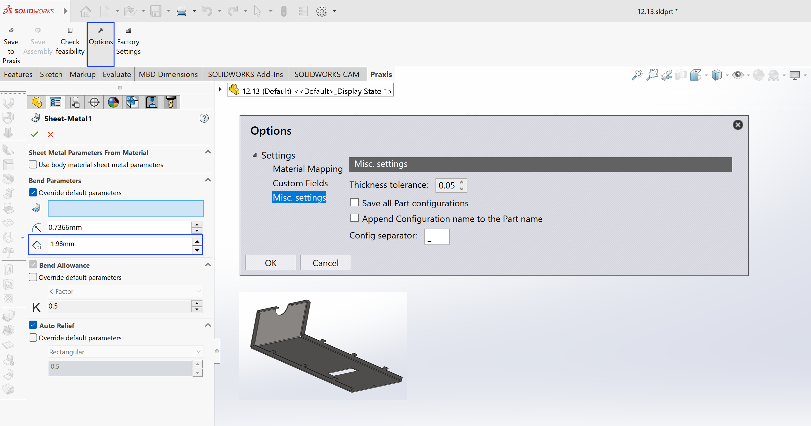
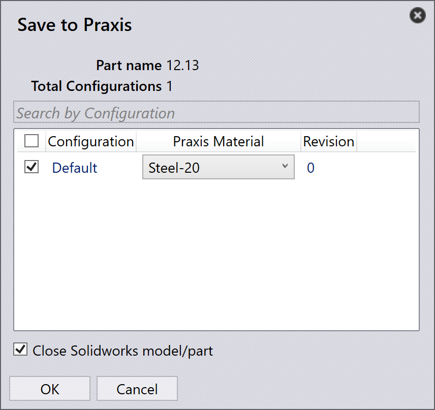

Enregistrer les pièces
Lancez SolidWorks et ouvrez une pièce de tôlerie (.sldprt).
Suivez ensuite ces étapes :
-
Passez à l’onglet TruSmartCAM dans SolidWorks pour accéder à la barre d’outils TruSmartCAM.
-
Cliquez sur Enregistrer vers Praxis dans la barre d’outils TruSmartCAM.
Dans la boîte de dialogue Enregistrer vers Praxis, sélectionnez la matière première TruSmartCAM appropriée, puis cliquez sur OK pour télécharger et enregistrer la pièce dans la bibliothèque de pièces TruSmartCAM.

La pièce sera maintenant enregistrée dans TruSmartCAM.

TruSmartCAM inclut quelques pièces d’exemple situées dans C:\Program
Files\Metamation\ TruSmartCAM \Samples\Parts. Vous pouvez les utiliser à des fins de test si
nécessaire.
|
Résolution automatique de la matière
Cette fonctionnalité convertit automatiquement les matériaux SolidWorks et les valeurs d’épaisseur de pièce en matières premières TruSmartCAM correspondantes lors du téléchargement.
Pour configurer la correspondance de matériaux :
-
Cliquez sur Options dans la barre d’outils TruSmartCAM pour ouvrir la boîte de dialogue Options.

-
Naviguez vers la page Cartographie matériaux.
-
Dans le volet de gauche, sélectionnez un matériau SolidWorks.
-
Dans le volet de droite, sélectionnez le matériau TruSmartCAM correspondant.
-
Cliquez sur Cartographier pour créer la correspondance.
-
La paire mise en correspondance apparaît dans la liste de correspondance en bas.
-
-
Pour supprimer une correspondance, sélectionnez-la et cliquez sur Décartographier.
Paramètre de tolérance d’épaisseur
La valeur de tolérance d’épaisseur définit la plage de tolérance dans laquelle TruSmartCAM fait correspondre l’épaisseur du modèle de tôlerie de SolidWorks à une épaisseur de matière première existante dans la base de données TruSmartCAM. Elle compense les petites variations d’épaisseur du modèle causées par les arrondis de conception, les conversions d’unités, etc…
Lorsque l’épaisseur de la pièce SolidWorks ne correspond pas exactement à un matériau dans TruSmartCAM, la valeur de tolérance garantit qu’un matériau disponible le plus proche est sélectionné automatiquement.
Avec un matériau nominal de 2,0 mm et une valeur de tolérance de 0,05 mm :
-
TruSmartCAM accepte toute épaisseur de modèle SolidWorks entre 1,95 mm et 2,05 mm comme une correspondance valide.
-
Les écarts au-delà de cette plage déclencheront une invite de sélection manuelle de matériau lors du téléchargement de la pièce.
Pour afficher ou modifier la valeur de tolérance :
-
Cliquez sur Options dans la barre d’outils TruSmartCAM, puis naviguez vers Autres réglages pour afficher la valeur de tolérance, puis cliquez sur Enregistrer vers Praxis.

-
Dans la boîte de dialogue Enregistrer vers Praxis, cliquez sur OK, la pièce sera enregistrée dans TruSmartCAM.

Lecture des propriétés de pièce personnalisées
Ce paramètre permet à TruSmartCAM de lire automatiquement les informations de pièce personnalisées—telles que Material, Revision et d’autres attributs définis par l’utilisateur—directement depuis les fichiers de pièces SolidWorks.
Pour le configurer :
-
Cliquez sur Options dans la barre d’outils TruSmartCAM pour ouvrir la boîte de dialogue Options, puis naviguez vers Champs de personnalisation.

-
Utilisez les boutons Cartographier et Décartographier pour lier les champs TruSmartCAM requis avec les champs personnalisés ou de configuration SolidWorks correspondants.
| Les valeurs affichées sont chargées à partir de la pièce SolidWorks actuellement active. |
-
Une fois la correspondance terminée, les propriétés personnalisées sélectionnées seront automatiquement lues depuis SolidWorks chaque fois que des pièces sont importées ou mises à jour dans TruSmartCAM, puis cliquez sur Enregistrer vers Praxis.
| Les correspondances définies ici sont enregistrées dans le référentiel TruSmartCAM et automatiquement synchronisées sur toutes les installations SolidWorks TruSmartCAM du réseau. |
-
Dans la boîte de dialogue Enregistrer vers Praxis, cliquez sur OK, la pièce sera enregistrée dans TruSmartCAM.